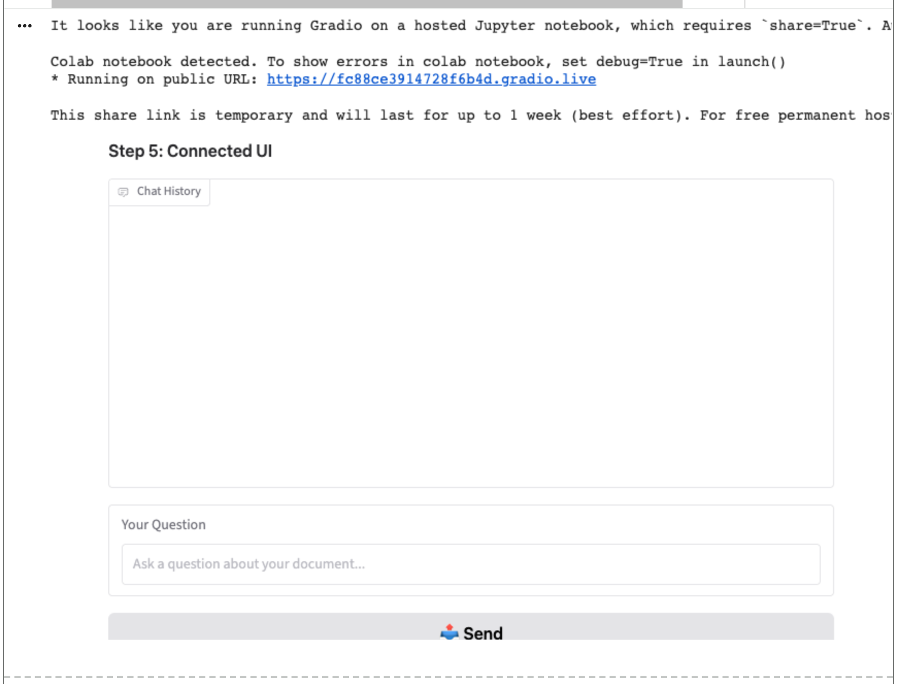

You've learned how to create a chatbot interface with Gradio, now it's time to put it into practice and make something that's yours. You'll build a document Q&A bot in Google Colab, then customize it with your own style and features.
Start from the chat window you built in the last reading, Build a Chatbot Window for Your Documents. Open the copy of the Gradio Chatbot notebook you saved there and run its cell. This is what it looked like:

(opens the picture full size in a new tab)Can't find your copy? Open the notebook below, click File → Save a copy in Drive, and work in the copy. This copy has one line changed from the team's notebook: the line that sends back the answer now uses the message format that today's Gradio needs.
If you don't understand anything, I think you should use Claude. Here are two sample prompts:
I'm learning to build a chatbot interface with Gradio in Google Colab. My task says: [paste the slide's instruction]. Explain in simple words what I need to do and give me one hint, but don't write the code for me.Here's my code and the error I got: [paste both]. Explain in plain English what's going wrong and give me one hint, but don't fix it for me.Never paste an API key into a chat.
Build your chatbot UI in Colab using Gradio.
Make it your own: play with layouts, colors, labels, and icons.
Change one thing, run the cell again and look at your app, then change the next thing. That way you always know which change did what.
Add at least one extra feature beyond what we covered in the tutorial, such as:
A dropdown menu is a box that opens a short list of choices when you click it.
Not sure what to build? Here are some ideas:
What to Submit
Colab File: with your working chatbot interface.
To check, click Runtime → Run all and wait. Every cell should finish without a red error, and your app should open under the last cell. A comment is a line that starts with #: Python skips it, so you can write a note in plain words.
Create a Google Slides File
To copy it, open the template and click File → Make a copy. A new tab opens with your copy. Work only in this copy.
Here's what goes in the form at the bottom of this page:
To share with view access, click Share at the top right of your file. Under General access, pick Anyone with the link and make sure it says Viewer. Then click Copy link. The video under these slides shows how.
Tip: Don't be afraid to experiment! Even if something doesn't work at first, document your attempts: problem-solving is part of the learning process.